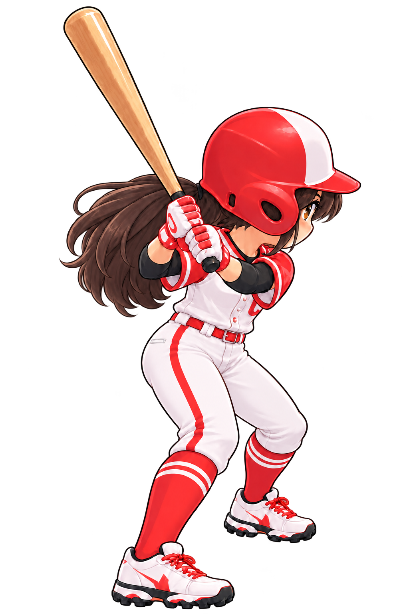
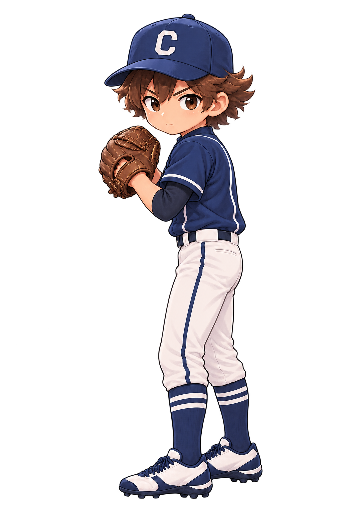

BATTING
＋AIM
THROW TO BASE
Loading artwork…


WELCOME TO GAME DAY
ON THE FIELD
Your team. Your game.
Playing as Guest1-inning exhibition · Local play
Batting practice complete
EVERYONE GETS A TURN
Choose a player
Save a name and your preferences on this device, or play as a guest.
Saved players
Guest preferences last for this session.
GUEST PREFERENCES
Game settings
These preferences apply to the current player.
Device test details
Changes save automatically for this player.
PLAYER RECORDS
Your record
QUICK CONTROLS
The game is paused. Find these controls in Pause any time.
Paused
Your current play is preserved.
Batting: drag the Aim pad, then tap Swing as the ball arrives.
Pitching: choose a pitch, drag to aim, then tap Pitch.
Fielding: players move automatically. Once the ball is secured, tap a base on the diamond to throw. ★ marks the suggested target.
ONE INNING · FINAL